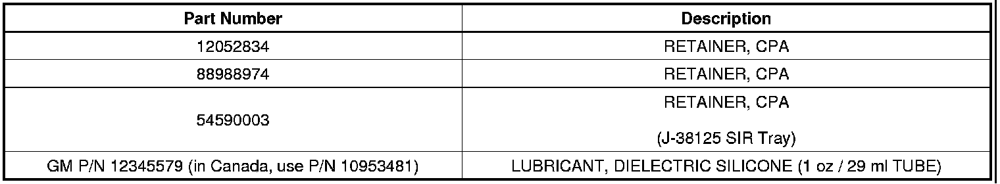
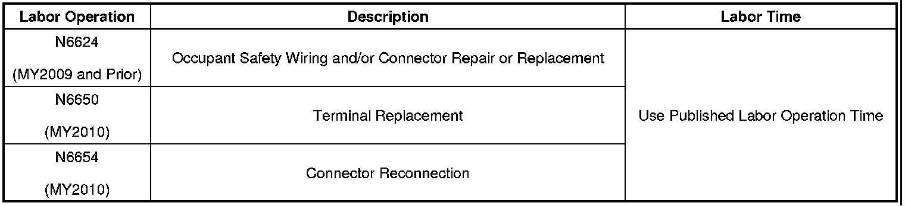

Restraints - Air Bag Lamp ON/Multiple DTCs
TECHNICALBulletin No.: 08-09-41-002G
Date: December 16, 2011
Subject: Diagnostic Information for Supplemental Inflatable Restraint (SIR) System, Intermittent AIR BAG Indicator/Lamp Illuminated with DTC(s) B0012, B0013, B0015, B0016, B0019, B0020, B0022, B0023, B0026, B0033, B0040, B0042 or B0044 Set (Inspect and Replace Connector Position Assurance (CPA) Retainer)
Models:
2005-2007 Buick Rainier
2006-2009 Buick Allure (Canada only), LaCrosse, Lucerne
2008-2012 Buick Enclave
2006-2011 Cadillac DTS
2007-2012 Cadillac Escalade Models
2008-2009 Cadillac XLR
2008-2011 Cadillac STS
2008-2012 Cadillac CTS, SRX
2005-2006 Chevrolet SSR
2005-2009 Chevrolet TrailBlazer, TrailBlazer EXT
2005-2010 Chevrolet Cobalt
2006-2007 Chevrolet Monte Carlo
2006-2011 Chevrolet HHR
2006-2012 Chevrolet Corvette, Impala, Malibu Models (includes Malibu Classic)
2007-2009 Chevrolet Equinox
2007-2012 Chevrolet Avalanche, Silverado, Suburban, Tahoe
2008-2012 Chevrolet Express
2009-2012 Chevrolet Traverse
2005-2009 GMC Envoy Models
2007-2012 GMC Acadia, Sierra, Yukon, Yukon Denali, Yukon XL, Yukon Denali XL
2008-2012 GMC Savana
2005-2006 Pontiac Pursuit
2005-2010 Pontiac G6
2006-2009 Pontiac Solstice
2007-2009 Pontiac Torrent
2007-2010 Pontiac G5
2008-2009 Pontiac G8
2007-2009 Saturn AURA, OUTLOOK, SKY
2008-2009 Saturn VUE
2008-2009 HUMMER H2
2007-2008 Daewoo G2X
2007-2009 Opel GT
Supercede:
This bulletin is being revised to add the 2011 and 2012 model years. Please discard Corporate Bulletin Number 08-09-41-002F (Section 09 - Restraints).
Condition
- Some customers may comment on an intermittent or current AIR BAG indicator or lamp being illuminated on the instrument panel cluster (IPC).
Important
This bulletin only applies to the following DTCs:
- Technicians may observe DTC(s) B0012 04, 0D, 0E; B0013 04, 0D, 0E; B0015 04, 0D, 0E; B0016 04, 0D, 0E; B0019 04, 0D, 0E; B0020 04, 0D, 0E; B0022, B0023 04, 0D, 0E; B0033 04, 0D, 0E; B0040 04, 0D, 0E; B0042 or B0044 set as Current or in History in the sensing and diagnostic module (SDM).
Cause
This condition may be caused by a loose, missing, or damaged connector position assurance (CPA) retainer at a supplemental inflatable restraint (SIR) module electrical connector, or a deployment loop wiring harness electrical connector.
Correction
Caution
When performing service on or near the SIR components or the SIR wiring, the SIR system must be disabled. Failure to observe the correct procedure could cause deployment of the SIR components. Serious injury can occur. Failure to observe the correct procedure could also result in unnecessary SIR system repairs.
1. Perform the Diagnostic System Check-Vehicle.
2. Identify the DTC that is set AND review the DTC Descriptor in the corresponding diagnostic procedure. Refer to Diagnostic Trouble Code (DTC) List-Vehicle in SI.
3. Using the information from the DTC Descriptor, determine the location of the affected electrical connector. Refer to SIR Identification Views and the Master Electrical Component List in SI.
4. Turn OFF the ignition and disable the supplemental inflatable restraint (SIR) system. Refer to SIR Disabling and Enabling in SI.
5. BEFORE removing, INSPECT the CPA retainer at the electrical connector.
Note
The connector and connector position assurance (CPA) may seat independent of each other. Both the connector and CPA should seat with an audible and/or tactile click. The CPA isolates the shorting-bars within the connector allowing the deployment circuit to operate properly.
• If the CPA retainer is loose, damaged, or will not seat in the connector, replace it with a new one. Reinstall the CPA correctly by first pushing the connector body in completely, and then pushing the CPA retainer in completely.
• If the CPA retainer is not loose or damaged and is properly seated, proceed to Step 6.
6. Remove the CPA retainer and disconnect the electrical connector. Inspect the terminals for the following conditions:
- Corrosion
- Contamination
- Terminal tension
- Damage
Important
The terminals in the SIR/SRS system are made with a special plating. This plating provides the necessary contact integrity for the sensitive, low energy circuits. Use the J-38125 SIR Terminal Repair Kit for repairing SIR/SRS terminals and connectors. DO NOT substitute any other terminals for those in the repair kit.
• If the terminals are damaged, corrosion is observed, or have poor tension, repair or replace as necessary. Apply dielectric grease, GM P/N 12345579 (in Canada, use P/N 10953481) on the connector pins and terminals when reassembling. Refer to SIR/SRS Wiring Repairs in SI.
Note
The connector and connector position assurance (CPA) may seat independent of each other. Both the connector and CPA should seat with an audible and/or tactile click. The CPA isolates the shorting-bars within the connector allowing the deployment circuit to operate properly.
7. Connect the electrical connector, and install the CPA retainer.
8. Enable the supplemental inflatable restraint (SIR) system. Refer to SIR Disabling and Enabling in SI.
9. Clear the DTC with a scan tool.
10. Verify that the DTC does not reset by performing the Diagnostic Repair Verification in SI.
• If any DTC resets, then refer to Diagnostic Trouble Code (DTC) List - Vehicle in SI.
Parts Information

Note
If the CPA retainer P/N 54590003 (Orange CPA) cannot be located in the J-38125 SIR Terminal Repair Kit, contact Kent Moore Tools @ 1-800-GM-TOOLS and order P/N 54590003-PKG to obtain a package of 5.
Warranty Information
Important
Select the appropriate Labor Operation for the repair that is performed.

For vehicles repaired under warranty, use:

Disclaimer